Most pages tell other companies you're there.
Open a news site and it quietly reports your visit to advertisers and analytics firms: what you read, roughly where you are, how long you stay. Nothing on the page shows it happening.


Fjord blocks ads and trackers on every site, sends nothing about you anywhere, and runs on Firefox, so it gets every security fix the day Mozilla ships it.

Open a news site and it quietly reports your visit to advertisers and analytics firms: what you read, roughly where you are, how long you stay. Nothing on the page shows it happening.
uBlock Origin and Firefox's strict tracking protection are built in and on from the first page you open. Blocked requests never leave your computer, so pages load faster too.

Shields in the address bar shows which companies a page tried to reach. If a site breaks, turn it down for that site only. Lockdown turns off scripts and cookies on sites you don't trust.

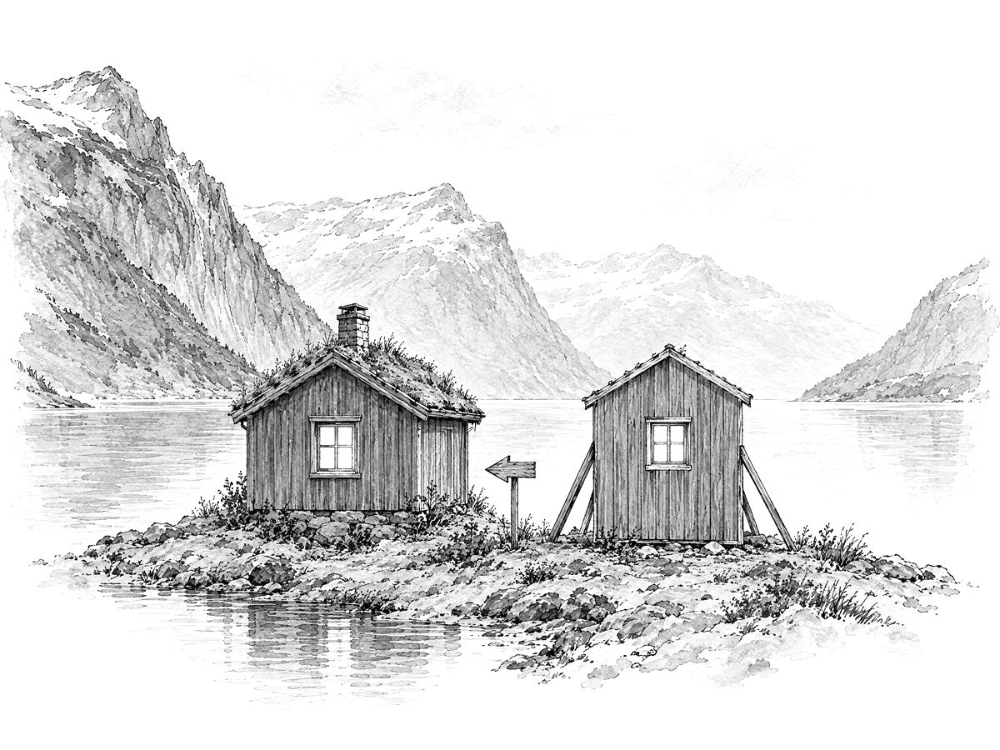
Sites named to look like a popular one are stopped before they load, with a link to the real one. The check runs on your computer.
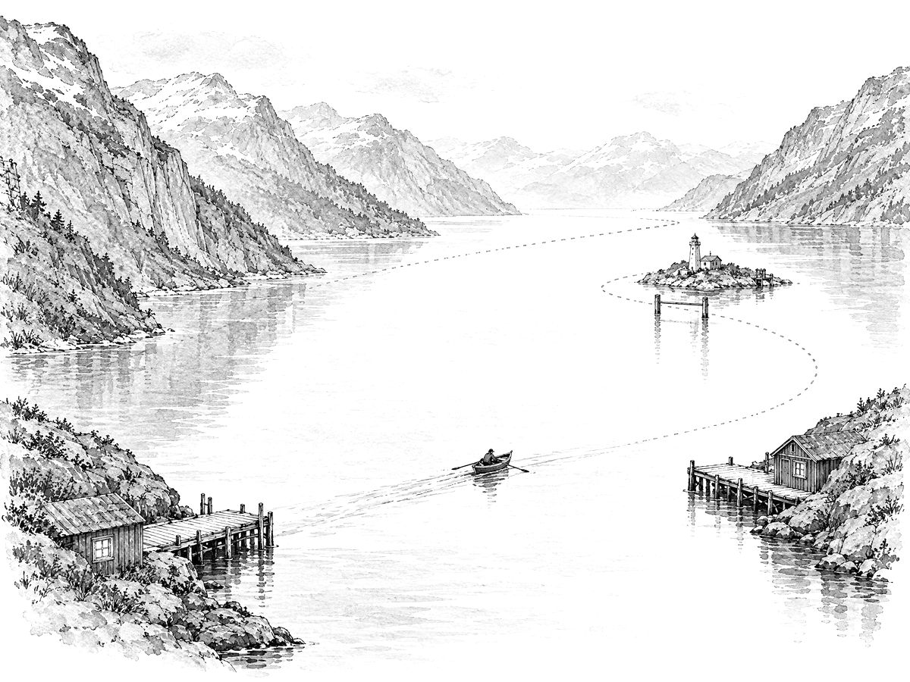
Links that pass through Google, Facebook or a newsletter's click counter go straight to the real site, so the middleman never hears about it.
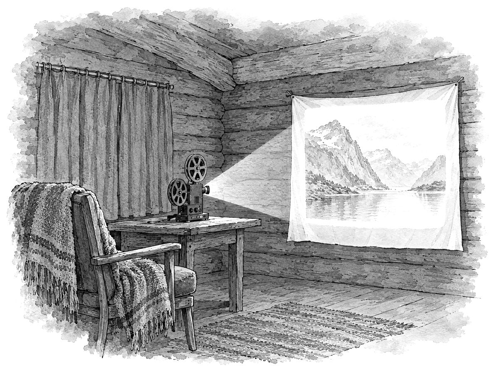
Videos play on their own in YouTube's privacy-enhanced player: no recommendations, no comments, and nothing goes into your YouTube history.
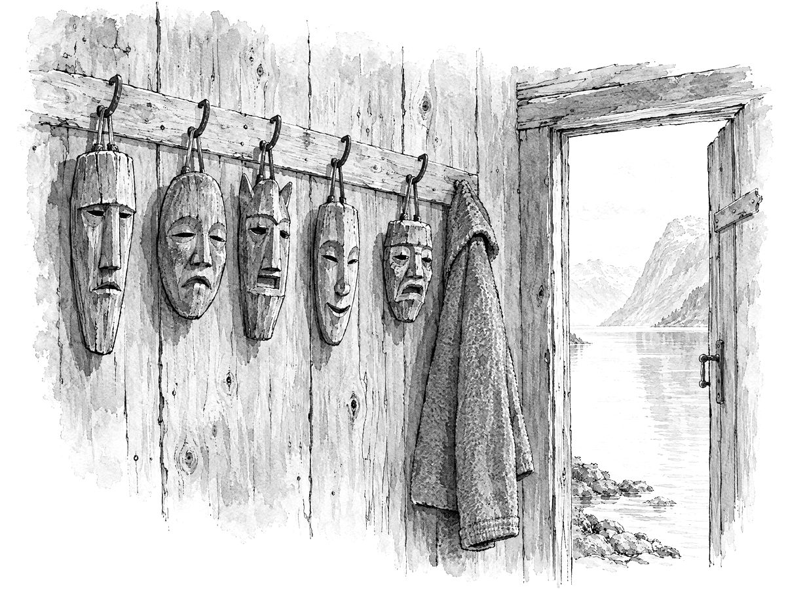
Sites can recognise you by how your computer draws a picture or plays a sound. Fjord adds tiny made-up differences, new for every site and every time you start it.
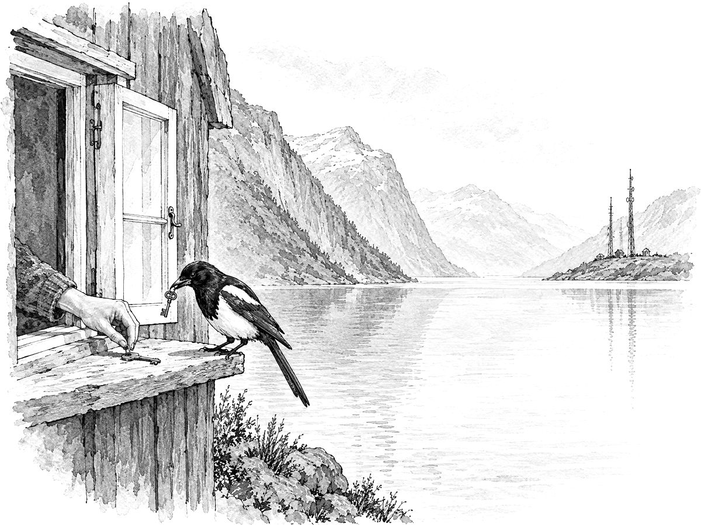
Some pages swap what you copy, so a wallet address or bank number you paste isn't the one you picked. Fjord notices and puts yours back.
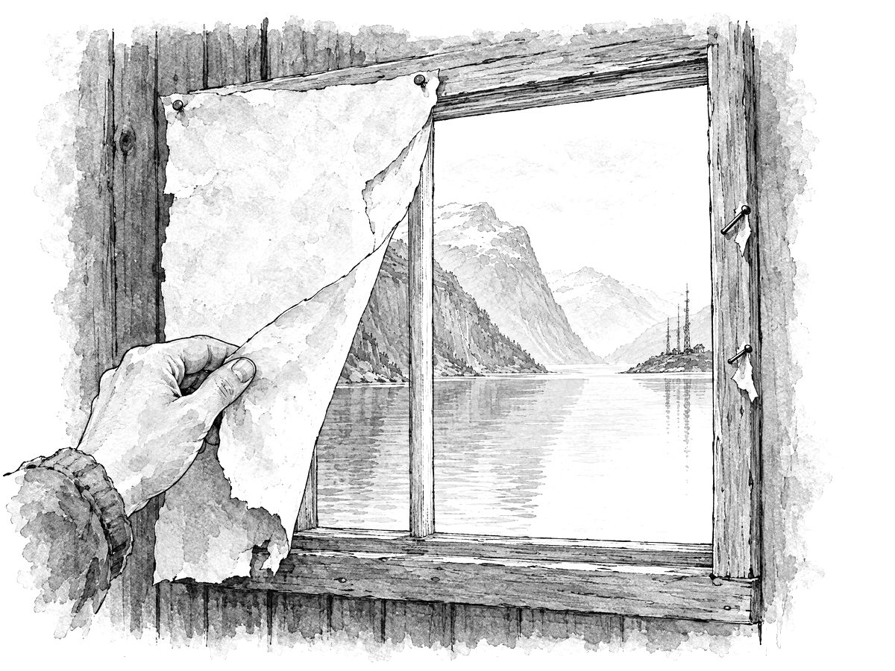
Right-click a cookie wall, a newsletter box or a sidebar you never read, and it's gone on that site from then on. Shields shows it again if you change your mind.
A Mist tab has its own cookies and forgets everything when you close it. Ghost mode does the same for all of Fjord, with exceptions for the sites you choose.
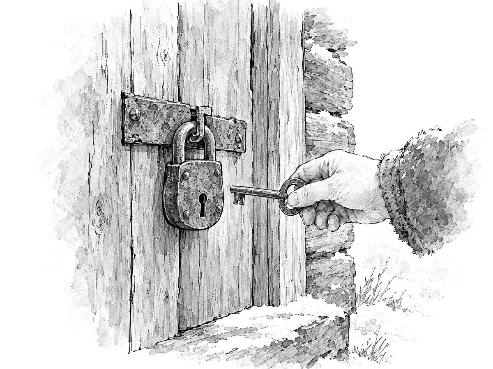
On a shared computer, Fjord can ask for Windows Hello or Touch ID when it opens or after you've been away, and hides tab titles while it's locked.
One box for your open tabs, bookmarks, history and everything Fjord does. Press Ctrl K, or ⌘ K on a Mac, and type “lockdown”, “mist” or the name of a tab.
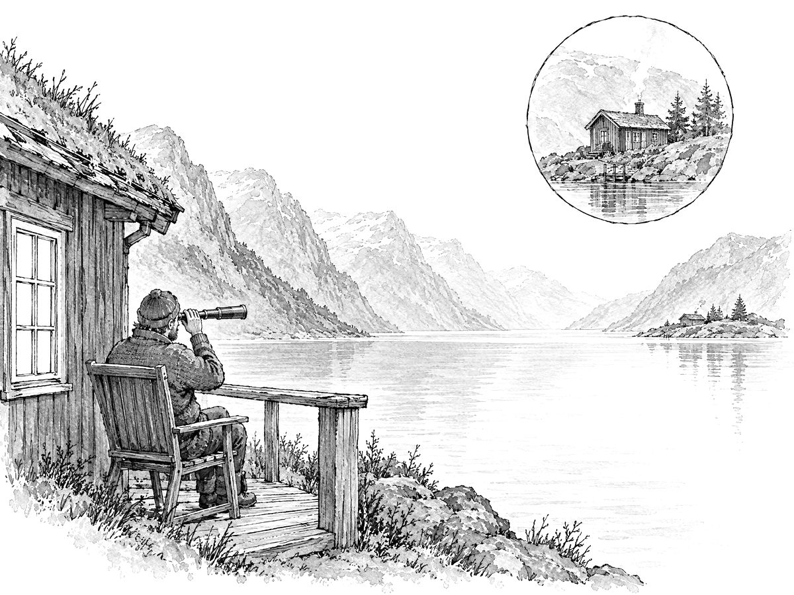
Shift-click a link and it opens in a window over the page, so you can read it without losing your place. Keep it as a tab, or press Esc.
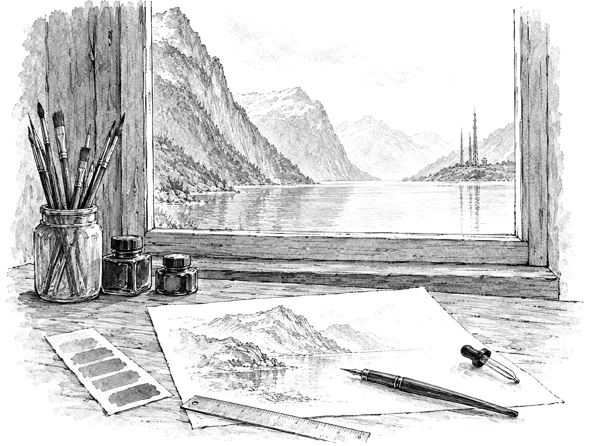
Pick a colour from any page, see which font something uses, save every image, SVG and font on a page, or screenshot the whole page at once.
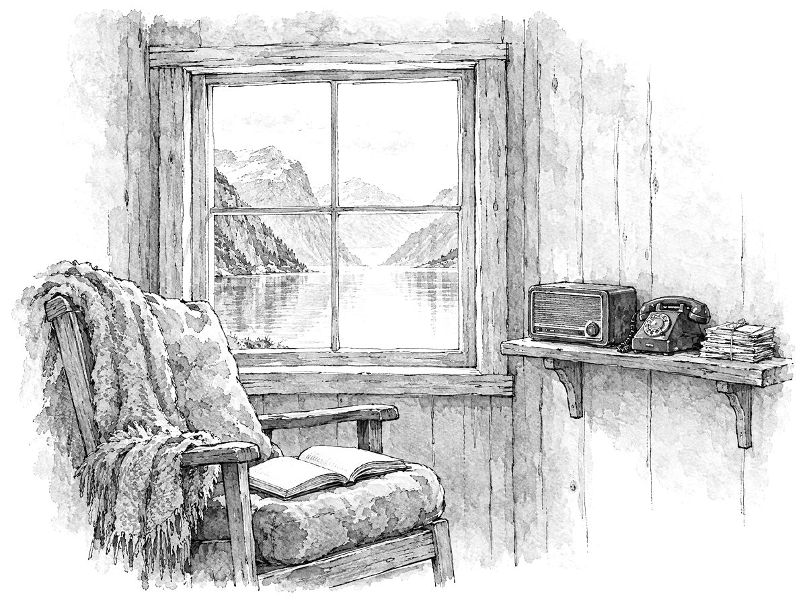
Spotify, WhatsApp, Discord or any site you like, one click away and signed in, next to whatever you're reading.
Fjord for iPhone and iPad brings Fjord Shields to Safari: the same ad and tracker lists Fjord blocks with, working in the browser you already use. Safari applies them itself, so Fjord never sees what you browse there.
Turn on Fjord Ads and Fjord Trackers once, in Settings, under Apps, Safari, Extensions.
Coming with Fjord for iPhone and iPad.
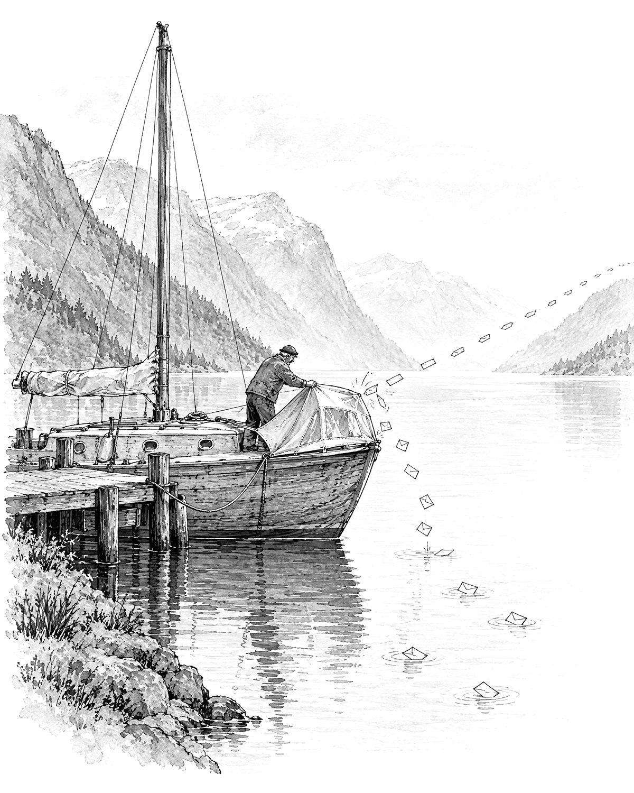
“No tracking” is easy to say. Fjord lists every connection it makes on its own, live, and what each one is for: security lists from Mozilla, filter updates for the ad blocker, and nothing about you.
There's no Fjord account, no usage data and no ads. Settings, history and passwords stay on your computer.
Windows 10 and 11. Installs for your account only, no admin password needed, and keeps itself up to date.
Apple silicon and Intel. Open the download and drag Fjord into Applications. It keeps itself up to date.
64-bit Intel and AMD, or ARM. Open the download: it installs Fjord for your account, adds it to your apps menu and keeps it up to date.
Fjord's blocking, fake-site warnings and private YouTube player, with Fjord Shields for Safari.
Windows may say it doesn't recognise the app yet. Choose “More info”, then “Run anyway”. The installer downloads Firefox straight from Mozilla and checks Mozilla's signature before installing.
The first time you open Fjord on a Mac, macOS says it can't check it. Open System Settings, then Privacy & Security, and choose “Open Anyway”.
On Linux, if the download doesn't open, right-click it, choose Properties and allow it to run as a program.
Yes. No ads, no paid tier, no account.
Underneath, yes: Fjord installs the official Firefox from Mozilla and sets it up with its own settings, look and features. That's why it gets Firefox's security fixes as soon as they're out. Fjord isn't made or endorsed by Mozilla.
Some private browsers are strict but fiddly to set up; others are easy to use but send data home. Fjord is built on Firefox, sends nothing home, and works out of the box, with Shields and a clear setup. On top, it warns you about fake sites and clipboard swaps, shows its own connections, and has tools for designers.
Very few do on the standard setting. If one does, open Shields in the address bar and turn it off for just that site.
On Windows, yes. Fjord locks them to your Windows account with a key only Windows can open, and you never have to type a password. A copy of your Fjord folder can't unlock them on another computer or account. Programs running on your own account can still ask Windows, so keep malware off your PC. Moving to a new PC? Export your passwords first. On a Mac or Linux, set a Primary Password in Settings to protect them the same way.
Every few hours Fjord checks for a new version of itself on GitHub and a new Firefox from Mozilla, and updates when you're not using it. It only installs a Fjord update signed with our release key, and a Firefox signed by Mozilla.
No. There are no analytics, cookies or third-party scripts here; even the animation libraries are served from this site. GitHub, which hosts it, keeps ordinary server logs.
Yes, it's all on GitHub.